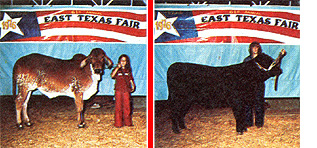

PHOTOGRAPHY: ANOTHER GOOD LITTLE HOMESTEAD BUSINESS
Do you like working with people and animals? Can you operate a camera well enough to produce top quality photographs? Do you own or can you get a serviceable 35mm camera? Would you like to earn as much as $50 ... $100 ... even $200 or more in a single day? Then become a part-time Livestock Show photographer!
It's Livestock Show time again! From early spring through late fall hundreds of thousands of 4-H'ers, Future Farmers of America, and other young herdsmen and -women annually exhibit their prize animals to judges and appreciative audiences all across the United States and Canada. And at a potential profit of $3.00 per animal, those shows can be worth a considerable chunk of cash to you if you know how to go about earning it!
Try your hand (and camera eye) as a Livestock Show photographer. That's what I do down here in east Texas, and I've found my part-time business to be an ideal enterprise to conduct from a small homestead.
A good 35mm single lens reflex camera outfitted with a "standard" 55mm lens is the main tool you'll need to set yourself up in this particular little venture. That, and an electronic flash or "strobe light". (Stay away from flash bulbs ... which are a constant expense, require too much storage space, are a never-ending hassle to handle and dispose of, and-in general-cause more confusion than they're worth.
Most of the junior showmen and - women (and their parents) that you'll be working with will want color photographs of their animals . . . and I've found Vericolor II by Kodak a very satisfactory film to use. Its colors hold true and its details-even in 11 X 14 enlargements-remain very sharp when Vericolor II is processed by a reputable firm. (I use Kodak for this work because I've learned the hard way: Owners of championship stock expect better photographs of their animals than most "quickie, overnight, cut-rate" processors can deliver.)
I offer only two sizes of prints to my customers: 5 X 7 and 8 X 10. You'll be wise to streamline your business the same way. Take the order when you snap the picture, get the money for it and the name and address that the print (or prints) are to be mailed to, and move on to the next animal. Then-as soon as the enlargements come back from the processor-deliver or send 'em to the buyers. In other words, follow the oI KISS formula: Keep It Simple, Stupid. Your operation will run a lot more easily and profitably that way.
Of course, if you want to branch out from the basics, you can. Newspapers and livestock magazines, for instance, will often buy black-and-white prints of show winners . . . and that "extra" money can be tempting. It does, however, mean another camera (loaded with b and w film) to carry around and deadlines to meet. And that can complicate your life more than I want mine complicated. Even if you do decide to expand your business this way, I'd advise doing so only after your bread-and-butter color work is smoothed out and running properly. Take just one step at a time. Remember KISS.
The "training" you'll need to produce salable livestock photos is no more complicated than the gear you'll use to make the shots. It mainly consists of learning how to pose your subjects . . . and you can pick that up rather quickly by studying a few livestock "breed" magazines.
Note-for instance-that sheep, lambs, and some horses look better "stretched" ... and are frequently posed that way. Dairy cattle are generally stretched somewhat too ... but beef cattle and hogs-which everyone wants to look "chunky"-never are. (An additional tip: When it comes to posing a hog, your most valuable tools are patience and a feed pan.)
Once you've gained a feel for the "ground rules" of farm animal photography, you're well advised to spend a few afternoons with the area 4-H leader, agriculture teacher, or county agent. Ask to be shown how livestock are "set up" in the show ring . . . and pay attention to what you see. This is the one "trick of the trade" that you're sure to find most valuable when you start clicking off the "best possible" pictures of your animal subjects.
And last but not least when it comes to the subject of training: Unless you need technical photographic information, stay away from professional and newspaper photographers. I've found that such people usually know very little about taking pictures of livestock and most don't even care to learn. (Which is why there's such a big bushel of opportunities open for someone-you!-who does want to master the particulars of this little business.)
Several weeks before any exhibit you intend to cover, check in with the show superintendents and have your name officially listed as photographer. You'll find that many of these shindigs (especially the smaller ones) will have no one else shooting pictures professionally at all . . . and you'll be welcomed with open arms.
Now's the time, too, to find out whether or not you'll have an official backdrop to pose livestock against. The "brass" at most fairs, exhibitions, etc., are only too happy to provide a drop with the show's name prominently emblazoned across the top. Just tell whoever is responsible that the setup should be plain and a medium pastel color (some breeds of animals do not photograph well against either white or black).
If possible, have this backdrop located very close to the show ring (sometimes it's even placed inside the ring). That way, when a winner is selected, its owner can bring it directly to you for its photograph.
When a show is in progress, be available. Nothing is more irritating to an exhibitor than to have to search out the photographer when it's time to have his or her animal's picture taken. And-as you'll soon learn-once a cow, horse, sheep, or whatever has been taken back to its stall . . . most exhibitors will be reluctant to lead the animal out again just to take a photo.
Then again, don't push your availability too far. If you're taking pictures inside the judging ring, for example, you must be absolutely certain that your activities will not get in the way of any exhibitors or judges and that your work does not slow down the action in the ring.
Color film costs me about $2.00 per 20-exposure roll and processing comes to another $7.90. That's $9.90 for 20 shots, or approximately 48 cents each. Add on $1.30 for a 5 X 7 blowup . . . and I have around $1.80 plus tax invested in each picture. OK. Round that figure off to $2.00 to cover any miscellaneous expenses and then tack on $3.00 per 5 X 7 print for profit and travel costs.
That's how I figure it and that's why I charge $5.00 for each 5 X 7 color blowup I sell. Black-and-white photos go for half that amount and I double the $5.00 price for color 8 X 10's. As my costs go up (and I'm sure they will), my prices will go up too.
After you've shot a few shows (and if your work is any good), you'll find that your reputation as a livestock photographer will grow surprisingly fast. And, before you know it, you'll probably have to start turning down some fairs, exhibitions, etc., because of conflicting dates. Ah . . . the price of success!
So get out there and work those shows! You have nothing to lose but a little time and, perhaps, a nice supplemental income to gain. And one further tip: Don't be afraid to ask some of the runners-up if they'd like to have their animals photographed too. Just because an exhibitor didn't win the first prize in his or her class . . . doesn't mean that a proud grandma or uncle somewhere won't want a picture of this Big Moment in that 4H'er or FFA'er's life.
|
 |
|
|